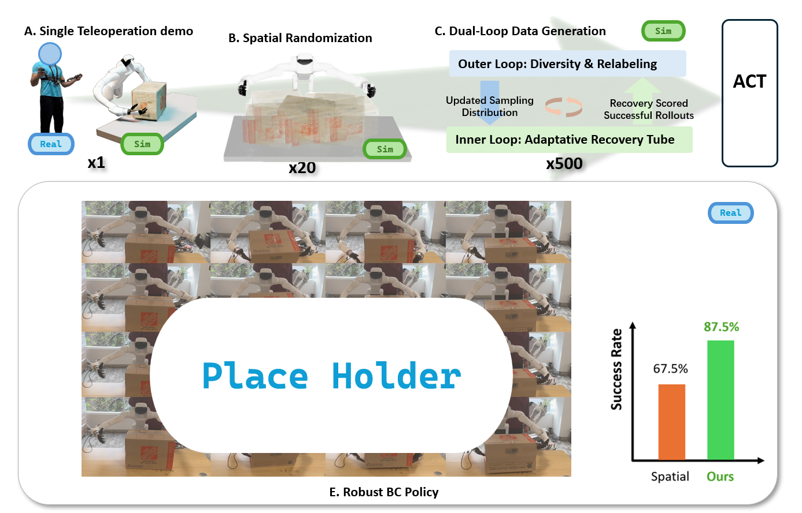
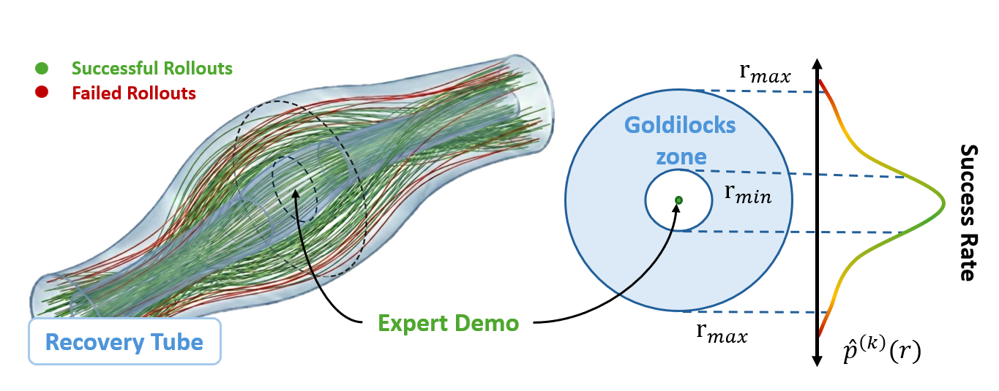
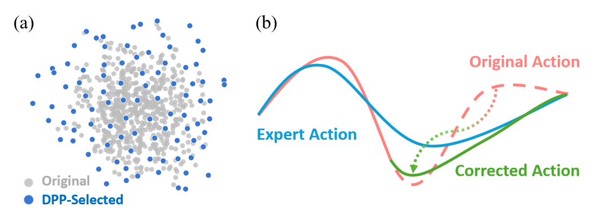
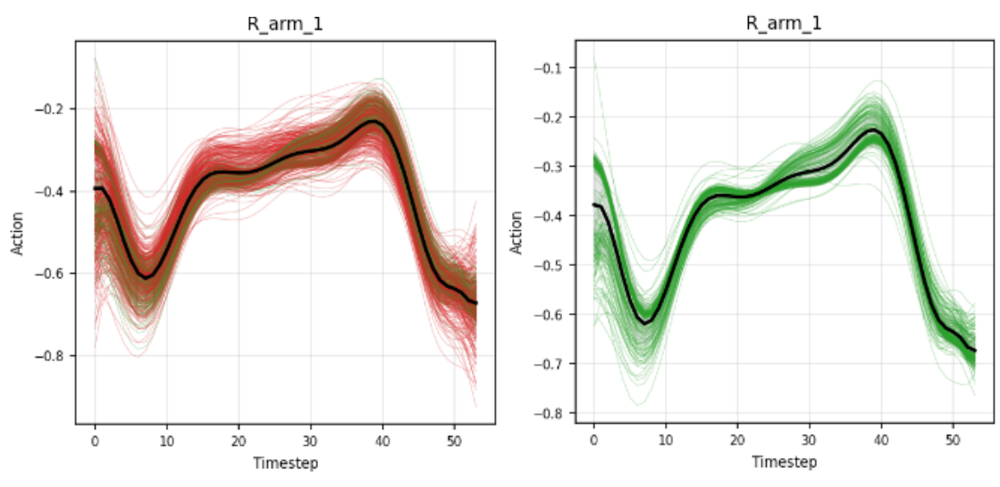
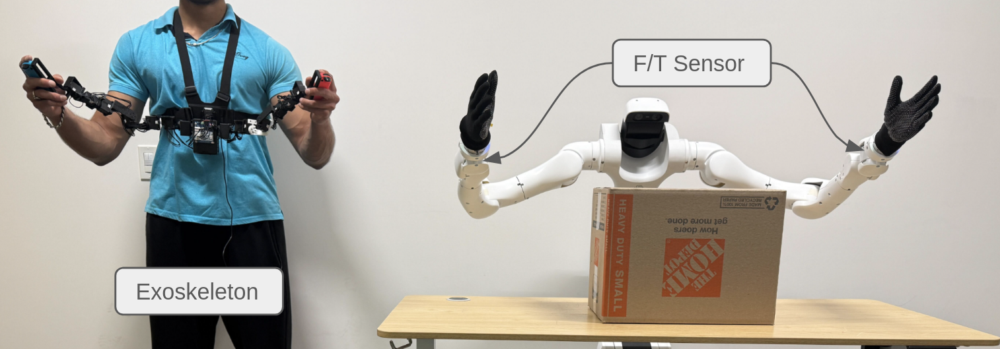
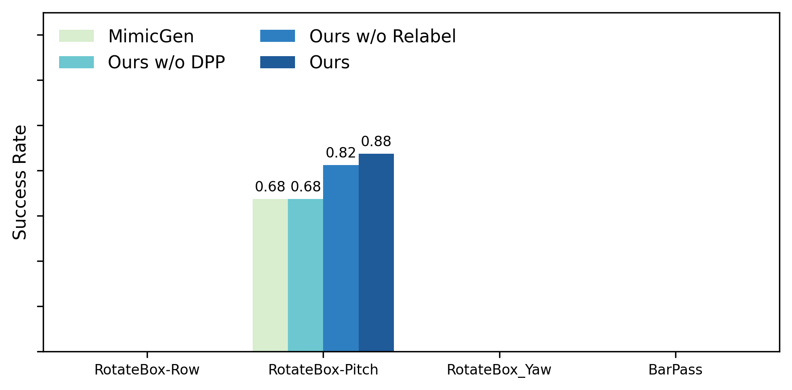

PGDG transforms a single teleoperated demonstration into a compact dataset of successful, diverse recovery behaviors via a dual-loop pipeline: spatial randomization followed by frontier-focused sampling (inner loop) and diversity-preserving curation with selective relabeling (outer loop), producing robust behavior cloning policies for contact-rich bimanual manipulation.
We propose PGDG (Physically Grounded Data Generation), a data generation framework that transforms a single demonstration into a compact dataset of successful, diverse recovery behaviors without additional human input. PGDG is designed around the failure mode of behavior cloning: it explicitly targets the boundary where recovery is still possible and harvests informative "near-failure" supervision, while preventing redundancy and mode collapse at the dataset level. Concretely, PGDG (i) uses full-episode simulation rollouts under stochastic perturbations to generate physically valid trajectories near the demonstration; (ii) tracks the recoverability frontier via an adaptive recovery tube so sampling concentrates on informative regimes; (iii) curates successful rollouts using DCT and a DPP objective to maximize recovery-mode diversity; and (iv) adds state-conditional recovery supervision by selectively relabeling maximally off-manifold states with short-horizon sampling-based control.
Target difficulty matters because recovery data has a "Goldilocks zone": near the demonstration there is no recovery signal, and far from the demonstration there are no successes. The adaptive tube bounds keep sampling in the narrow band where deviations are frequent yet recoverable, maximizing informative recovery supervision per rollout.

Figure 1: Adaptive Recovery Tube. The recovery tube visualization shows successful and failed rollouts around the expert demonstration. The "Goldilocks zone" between trivial and dangerous regions is identified using the empirical success rate, focusing sampling where deviations are frequent yet recoverable.

Figure 2: Outer-loop diversity selection and relabeling. (a) Inner-loop rollouts are embedded with DCT features, and a DPP selects a compact, diverse subset to maximize coverage per sample. (b) CEM relabeling refines the risky segments of selected trajectories by resampling action labels with corrective actions.

Figure 3: Data generation example. Left: all sampled rollouts/trajectories generated by the sampler. Right: the subset of successful (and selected) trajectories retained and stored in the dataset.

Figure 4: Teleoperation setup. A GELLO-style exoskeleton is used to perform Cartesian space teaching in simulation on the Dexmate Vega bimanual platform.
Video
Video
Video
Video
Task demonstrations: Four bimanual manipulation tasks used to evaluate policy robustness under domain randomization.

Figure 5: Policy evaluation in simulation. MimicGen denotes data generated with only spatial randomization. Ours w/o Relabel denotes data generated without CEM relabeling. Ours w/o DPP denotes data generated with only inner loop sampling. Our full method achieves the highest success rates across tasks.
Video Placeholder
Video Placeholder
Video Placeholder
Real-world deployment: Policies trained on PGDG-generated data transfer to the real Dexmate Vega platform for contact-rich bimanual manipulation.
Acknowledgements will be added upon publication.
@article{pgdg2025,
title = {Physically Grounded Data Generation for Robust Bi-manual
Policy Learning from Few Demonstrations},
author = {Anonymous},
year = {2025}
}